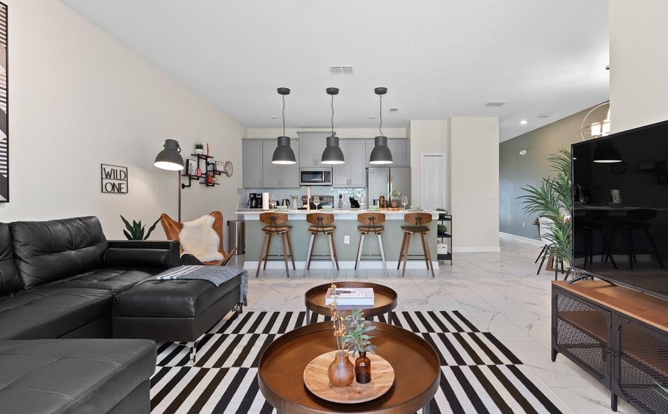
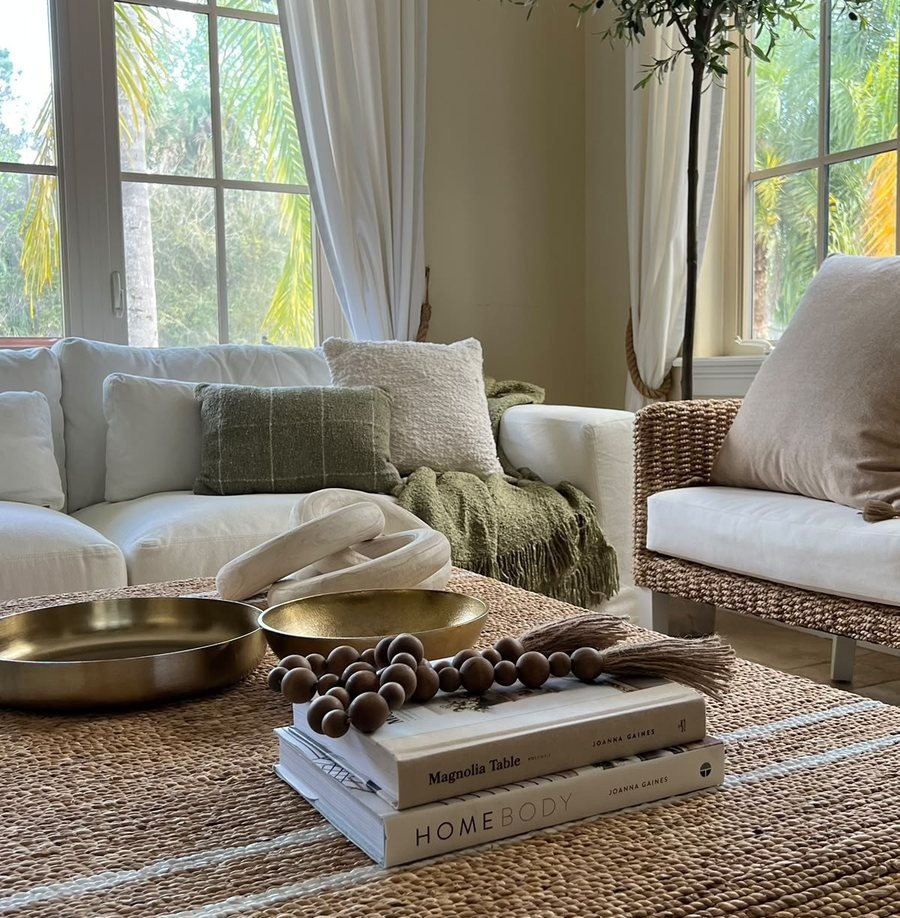
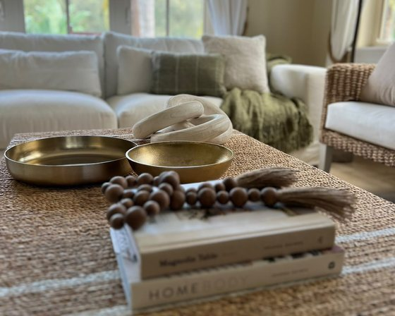

Briefing
Questionário, fotos, medidas e reunião para definir conceito, prioridades e orçamento.

Uma consultoria 100% online para sala integrada com cozinha, respeitando seu estilo, seu orçamento e aproveitando o que você já possui.
Do briefing à apresentação final, a Fernanda constrói uma direção completa para o ambiente.
Conhecer a consultoria ↓A proposta parte do que você já possui, da sua rotina, do seu gosto e do orçamento disponível. A Fernanda identifica o que vale manter e constrói uma direção coerente para o ambiente.

Questionário, fotos, medidas e reunião para definir conceito, prioridades e orçamento.
A Fernanda desenvolve a proposta completa para a sua sala integrada.
Reunião online, explicação das escolhas e até duas rodadas de ajustes.
As fotos dos quatro cantos devem ser feitas, aproximadamente, a 1,50 m de altura.

Uma proposta completa para que cores, proporções, materiais e elementos conversem entre si no ambiente.
Seu projeto será entregue em até 15 dias
após o briefing.
Para quem deseja receber a direção completa e executar as compras por conta própria.
ou R$ 2.497 à vista
Para quem quer receber o projeto e contar com a Fernanda também nas escolhas, nas compras e na montagem.
ou R$ 2.997 à vista
No formato completo, você não recebe apenas o projeto. A Fernanda acompanha as escolhas e ajuda a transformar a proposta em uma sala pronta.
No formato completo, a Fernanda seleciona opções compatíveis com o orçamento, envia os links de compra e acompanha a execução em um grupo exclusivo de WhatsApp.
As duas reuniões online orientam a montagem inicial e a composição final. Durante 30 dias, você também pode esclarecer dúvidas sobre medidas, posicionamento e execução.
A curadoria e os links são definidos na entrega do projeto. O período de acompanhamento não inclui uma nova curadoria ou novos links.


Empresária há mais de 30 anos e decoradora, Fernanda parte do que vale a pena manter para criar ambientes coerentes com a vida real.
Conte com a Fernanda para transformar medidas, referências e necessidades reais em um projeto claro para executar.
Escolher o formato de atendimento ↑Escolha uma opção acima para seguir ao checkout seguro.